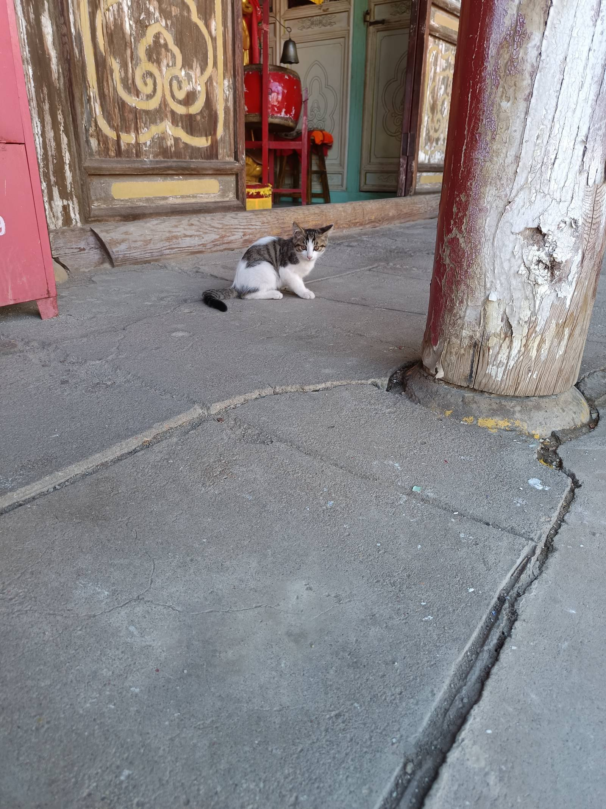
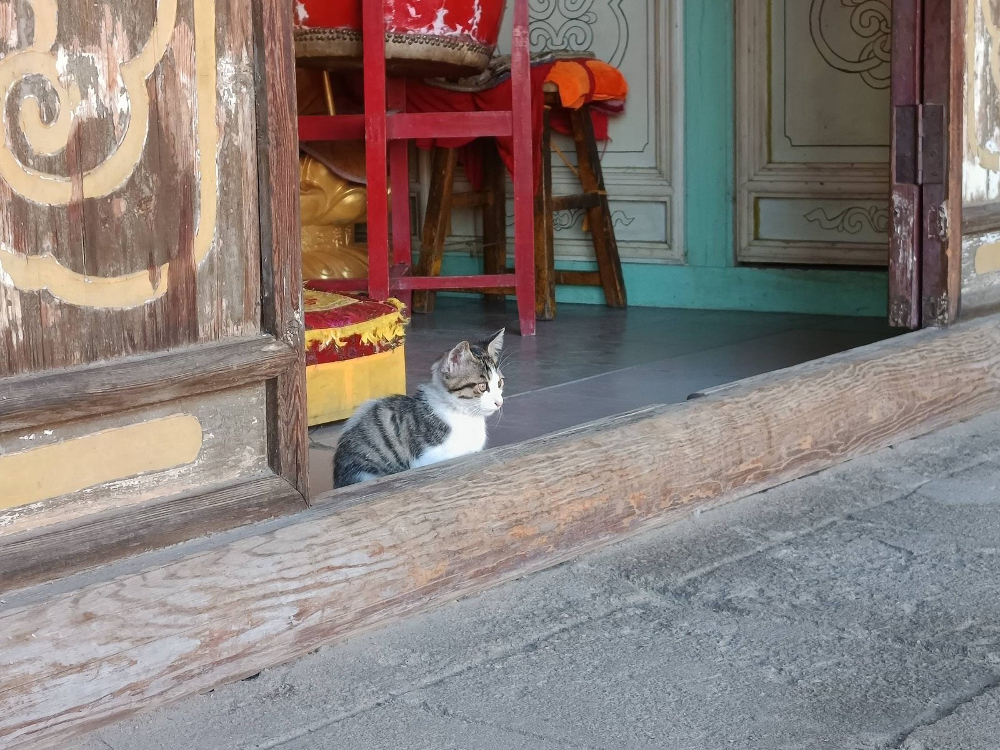
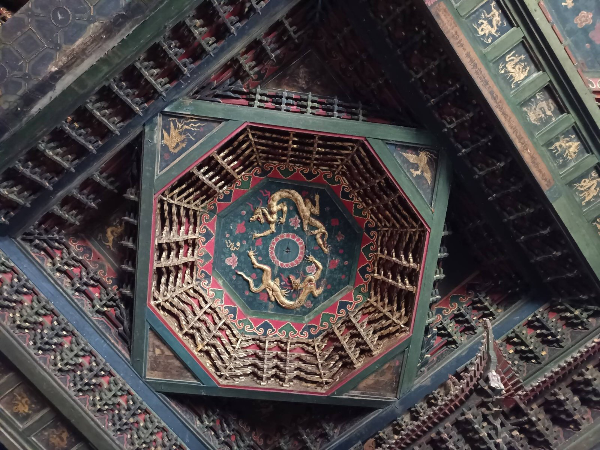
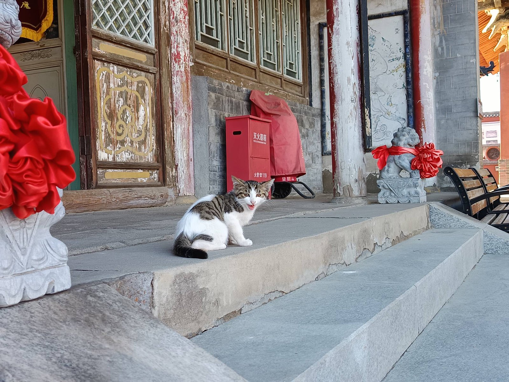
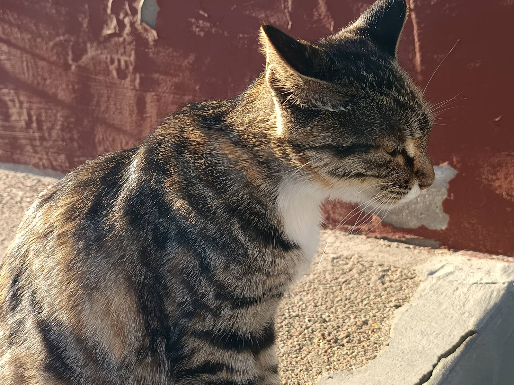

进大同古城的第一站，是善化寺。
辽金的殿宇还没看仔细，先被门口一位"工作人员"拦下——
一只狸白猫，睡在山门边的石阶上，负责检阅每一位访客。
善化寺俗称"南寺"，中国现存规模最大、布局最完整的辽金寺院。山门、三圣殿、大雄宝殿沿中轴线一字排开——梁思成当年考察时，对这里的斗拱与斜拱盛赞有加。
但这些都不急。寺是要慢慢看的，猫也是。它在殿前的老木门边卧成一团，听见快门声，耳朵动了一下，眼睛都没睁。

检阅访客，是它的全职工作·the gatekeeper

门槛内外，它都熟门熟路·the threshold
走进大雄宝殿，抬头的那一刻，会忘了呼吸。
当心间正上方，是一座辽代的斗八藻井——方形平綦嵌套八角穹顶，五十六朵微型斗拱分上下两层层层收拢，不用一颗铁钉，纯榫卯咬合。中心是黑漆底上沥粉贴金的双龙戏珠，四角雕凤凰，红绿金三色，是辽代原雕。
藻井正下方，坐着五方佛；两侧是金代的二十四诸天——三米半高的彩塑，文武各异，其中的吉祥天女被称为"东方蒙娜丽莎"。辽金的匠人把天宫搬到了佛祖头顶。

五十六朵斗拱，托着一千年的天宫·the caisson
出殿，阳光正好。猫换了个地方，接着睡——从山门睡到了月台的石阶上，又从石阶睡到了红墙根。
我在院子里坐了很久。殿檐的影子慢慢移动，风把檐角的铃碰响一声，猫的耳朵跟着动一下，然后继续睡。它对这座寺的了解，大概比所有讲解员加起来都多。

石阶被晒得温热，正好睡觉·the sun-warmed steps

红墙下打个盹，就是一千年·the red wall
藻井上的龙，盘了一千年；
台阶上的猫，睡了一个下午。
佛管永恒，猫管当下。